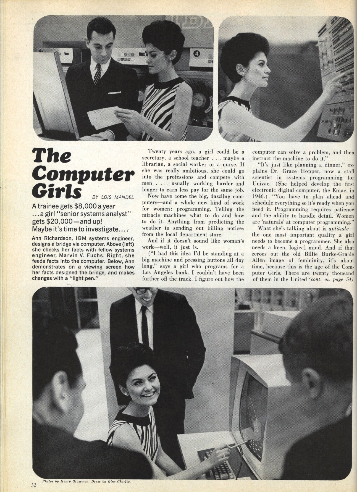

Pense rápido: qual era seu brinquedo favorito? É provável que, caso você seja mulher, a resposta
seja boneca ou panelinhas. Se você é homem, possivelmente respondeu à pergunta lembrando de
videogames ou computadores. Essa divisão, considerada natural por muitos, reflete estereótipos de
gênero construidos historicamente, que delegam às garotas, desde cedo, tarefas e interesses
relacionados à esfera do cuidado e ao âmbito privado. “Não podia brincar com meus primos e irmãos.
Era presenteada com bonecas e objetos cor-de-rosa, que eu detestava", conta a analista de sistemas
Larissa Pereira Gambale, 22 anos. Já a designer de produto Lucía Salamanca, 27 anos, cansou de ouvir:
“você não pode ser igual aos meninos”, “olha, ralou o joelho...Parece moleque!”, “Tente ser mais feminina…”.
Apesar de ter sido desbancada pela ciência, ainda persiste a ideia de que razões biológicas determinam
os caminhos distintos de meninos e meninas. De acordo com essa percepção, a mulher teria uma habilidade
“natural” para atividades que exigem atenção e afeto, mas não racionalidade, atributo considerado masculino.
Existem diferenças sutis no tamanho e na composição dos cérebros masculino e feminino, é verdade. A relação
entre elas e o comportamento de ambos, entretanto, continua desconhecida. Vale lembrar que a estrutura e a
função cerebral mudam em resposta à experiência, de modo que quaisquer diferenças podem relacionar-se à diferenças
em sua socialização e educação. "A maneira como nossa sociedade pensa e define o que é ser mulher e o que é ser
homem tem relação direta com o desenvolvimento de suas habilidades e competências", diz a socióloga Bárbara
Castro, autora de uma pesquisa de doutorado que investigou a presença feminina em TI.
Tal divisão repercute nos modos de ser de homens e mulheres, influenciando escolhas futuras, inclusive as
profissionais. Não por acaso, é incomum ver meninas que se identifiquem desde cedo com as carreiras
tecnológicas e das ciências exatas. Em seu estudo, Bárbara descobriu que todas as suas entrevistadas buscavam
uma justificativa de interesse pela área amparadas na inspiração em alguém próximo que havia escolhido essa
carreira e lhes mostrado como ela poderia ser interessante. Já os homens, quando perguntados sobre como e quando
se interessaram por TI, respondiam que sempre gostaram de tecnologia e máquinas. "É um caminho que para eles se
apresenta como natural. Para elas, algo a ainda ser desbravado", diz Bárbara.
“Minha família até tentava direcionar minhas atividades para coisas mais femininas,
mas eles sempre apoiaram que eu explorasse o que quisesse. Gostava de desmontar as
bonecas para, por exemplo, tirar o motorzinho e fazer um ventilador.”
Tatiane F., 36 anos
Segundo a pesquisadora, essa construção atravessa gerações. As feministas inglesas,
or exemplo, já demonstraram como se estabeleceu uma relação entre tecnologia e masculinidade
historicamente. “Quando, na revolução industrial, no século 19, separa-se o trabalho produtivo
do espaço da casa e os homens é que passam a atuar mais massivamente no trabalho industrial,
eles é que manipulam as máquinas, as desenvolvem e as aperfeiçoam”, continua ela.
A associação entre tecnologia e masculinidade continua a distanciar as meninas de TI. Elas sofrem
preconceito de amigos, colegas e da sociedade ao fazer escolhas atreladas ao universo masculino.
“Muitas vezes, são acusadas de serem homossexuais, o que não deveria ser um problema em si”,
finaliza Bárbara. “Meu pai me proibia de utilizar qualquer brinquedo masculino. Certa vez, ganhei
um pião e ele jogou fora. Achava que eu pudesse virar ‘sapatão’!. Quando decidir ir para a faculdade
de TI, por sorte ele não sabia o que era”, conta Tuany Fortunato, 26 anos. E o que dizer do estereótipo
do programador inteligente, mas sem muitas habilidades sociais, que vara noites escrevendo códigos?
“É difícil se identificar com algo que não somos”, diz diz Sílvia Amélia Bim, professora da Universidade
Tecnológica Federal do Paraná (UTFPR) e uma das coordenadoras do Emílias - Armação em Bits, projeto que
visa incentivar a tecnologia como opção de carreira para meninas, além de apoiar as que já estão no ensino
superior.
O processo de masculinização da informática, mais precisamente, a figura do geek anti-social, se desenvolveu
na década de 1960, a partir da instituição de programas formais da disciplina, de revistas e sociedades
profissionais e programas de certificação. Ou seja, tem pouco a ver com habilidades intelectuais de origem
biológica, mas com corporativismo. Quem conta essa história é Nathan Ensmenger, professor da Universidade
de Indiana, nos Estados Unidos, no livro The Computer Boys Take Over: Computers, Programmers, and the Politics
of Technical Expertise (sem tradução no Brasil).
Ao mesmo tempo, novas ferramentas de contratação - incluindo as aparentemente objetivas - reforçaram a presença
masculina na área. Os testes privilegiavam problemas matemáticos, cuja resolução estava disponível em associações
e organizações universitárias de programadores. Um outro tipo de avaliação, o perfil de personalidade, inclinou-se
ainda mais para os candidatos do gênero masculino. Com base em uma série de perguntas, elaboradas por recrutadores,
tais provas procuraram identificar os melhores, tendo como referência os traços de personalidade de profissionais de
colarinho branco (funcionários de escritório, advogados, contadores, por exemplo), com uma distinção: o funcionário
ideal tinha "desinteresse nas pessoas" e não gostava de "atividades envolvendo uma interação pessoal".
E foi assim que, a informática, tema de uma reportagem da revista Cosmopolitan que, em 1967, encorajava as mulheres
a aderir à área, virou terreno masculino.

A ideia de que muitas das profissões de informática eram historicamente comuns para as garotas e de fato já foram
ocupações 'femininas' parece extraordinária, se não inacreditável. “E, no entanto, uma compreensão histórica de
como as profissões de computação adquiriram sua identidade de gênero, como elas eram "feitas masculinas" é fundamental
para qualquer tentativa de enfrentar o desequilíbrio atual", escreve Ensmenger.